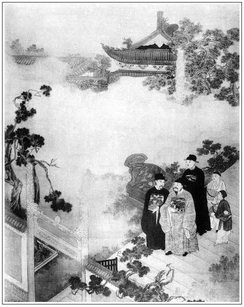

張回此回托夢，方結住瓶兒。下回雖時復照應瓶兒，乃是點染，非真結也。此回瓶兒已結，看其寫袁指揮家便見。
篇末寫風。夫前酒令內寫風花雪月，但上半部寫花，寫月，寫雪，並未寫風。今一寫風，而故園零落矣。故特特寫風，非尋常泛寫也。然而此書亦絕無一筆泛寫之筆。
此書以玉皇廟、永福寺作起結，而以報恩寺作關目。今忽寫相國寺、黃龍寺，蓋為前後諸寺作點睛也。
寫何太監送飛魚衣，真是末世無禮之極。
寫朝散，止用十二象不牽而自走，便將朝散寫得活現，真是一筆勝人千萬筆。
上文參太尉，此回引奏。一篇冠冕文字，偏又夾入瓶兒托夢，王經解饞，真是矯健不由人意料處。
上回已極力寫太尉，此回若再寫朝罷復參，便嚼臘矣。故止用「知印拿印牌來」一照，便生動之極。且隨手收拾，止用「又過一夕」，「又掛了號，又辭了翟管家」，使上二回無數文字，三「又」宇一齊收拾乾淨，真是史中妙品。
朝見必用拜冬，又映瓶兒十月死期，又出改重和元年，映西門明年正月死期也。
又重和元年，直照開講「政和年間」四字，是一部書大照應、大起結處。蓋政和敘起「熱」字，重和接寫「冷」字，一百回文書，固應有許多對峙關鍵也。
又春梅，下半部書之樞紐也。故必寫拜冬，一陌生而梅花之消息動矣，故下文即頻以玉簫吹之也。
自前回至此回，寫太尉，寫眾官，寫太監，寫朝房，寫朝儀，至篇末，忽一筆折入斜陽古道，野寺荒碑，轉盼有興衰之感，真令人悲涼不堪，眼淚盈把，然黃龍寺又寓言起風之源。言西門精髓將枯，腎水已竭，不能生此肝水，血不聚而風生黃龍之府，四肢百骸，將枯朽不起矣。故下文西門死，必雲相火燒身變出風來，蓋為此也。泛泛觀之，烏知其寓意之妙！然則相國寺，又相火之寓名歟？僧名智雲可見。
寫設朝是一番筆意，散朝是一番筆意，總非小子輩所能夢見。
永福寺，眾人托生。乃於此處先輕輕提出──袁指揮，真是雲外神龍忽露一爪，令人不可擬議其妙。
詞曰：
花事闌珊芳草歇，客裡風光，又過些時節。小院黃昏人憶別，淚痕點點成紅血。
咫尺江山分楚越，目斷神驚，只道芳魂絕。夢破五更心欲折，角聲吹落梅花月。
──右調《蝶戀花》

話說西門慶同何千戶回來，走到大街，何千戶就邀請西門慶到家一飯。西門慶再三固辭。何千戶令手下把馬環拉住，說道：「學生還有一事與長官商議。」於是並轡同到宅前下馬。賁四同抬盒逕往崔中書家去了。原來何千戶盛陳酒筵在家等候。進入廳上，但見獸炭焚燒，金爐香靄。正中獨設一席，下邊一席相陪，旁邊東首又設一席。皆盤堆異果，花插金瓶。西門慶問道：「長官今日筵何客？」何千戶道：「家公公今日下班，敢屈長官一飯。」西門慶道：「長官這等費心，就不是同僚之情。」何千戶道：「家公公粗酌屈尊，長官休怪。」一面看茶吃了。西門慶請老公公拜見，何千戶道：「家公公便出來。」
不一時，何太監從後邊出來，穿著綠絨蟒衣，冠帽皂鞋，寶石絛環。西門慶展拜四拜：「請公公受禮。」何太監不肯，說道：「使不的。」繡旁禮應如此，擔有托與他，焉得受禮。張夾三字妙。西門慶道：「學生與天泉同寅晚輩，老公公齒德俱尊，又系中貴，自然該受禮。」講了半日，何太監受了半禮，讓西門慶上坐，他主席相陪，何千戶旁坐。西門慶道：「老公公，這個斷然使不得。張夾加二字更妙。同僚之間，豈可旁坐！老公公叔侄便罷了，學生使不的。」何太監大喜道：「大人甚是知禮，繡眉內臣心性口角，如聞如睹。罷罷，我閣老位兒旁坐罷，教做官的陪大人就是了。」張夾活跳。西門慶道：「這等，學生坐的也安。」於是各照位坐下。何太監道：「小的兒們，繡旁酷肖。再燒了炭來。張夾一絲不錯。今日天氣甚是寒冷。」須臾，左右火池火叉，拿上一包水磨細炭，向火盆內只一倒。張夾是太監倒炭。廳前放下油紙暖簾來，日光掩映，十分明亮。何太監道：「大人請寬了盛服罷。」西門慶道：「學生裡邊沒穿甚麼衣服，使小價下處取來。」何太監道：「不消取去。」令左右接了衣服，「拿我穿的飛魚綠絨氅衣來，與大人披上。」西門慶笑道：「老先生職事之服，繡眉淡淡一語，寫出名分之爛。學生何以穿得？」何太監道：「大人只顧穿，怕怎的！張夾可歎。昨日萬歲賜了我蟒衣，我也不穿他了，就送了大人遮衣服兒罷。」張夾更妙。不一時，左右取上來，西門慶令玳安接去員領，披上氅衣，作揖謝了。又請何千戶也寬去上蓋陪坐。又拿上一道茶來吃了，何太監道：「叫小廝們來。」繡旁此內相家所必有。繡眉的是內相口中話，一字挪移不動。原來家中教了十二名吹打的小廝，兩個師範領著上來磕頭。何太監就吩咐動起樂來，然後遞酒上坐。何太監親自把盞，西門慶慌道：「老公公請尊便。有長官代勞，只安放鍾箸兒就是一般。」何太監道：「我與大人遞一鍾兒。我家做官的初入蘆葦，不知深淺，望乞大人凡事扶持一二，就是情了。」繡旁映後同往一事。西門慶道：「老公公說那裡話！常言：同僚三世親。學生亦托賴老公公餘光，豈不同力相助！」繡眉西門慶處世情，亦頗在行。何太監道：「好說，好說。共同王事，彼此扶持。」西門慶也沒等他遞酒，只接了杯兒，領到席上，隨即回奉一杯，安在何千戶並何太監席上，彼此告揖過，坐下。吹打畢，張夾以上皆吹打時據說者也。三個小廝連師範，在筵前銀箏象板，三弦琵琶，唱了一套《正宮·端正好》「雪夜訪趙普」、「水晶宮鮫綃帳」。張夾又是宋朝，總見寓言也。又點令意。唱畢下去。
酒過數巡，食割兩道，看看天晚，秉上燈來。西門慶喚玳安拿賞賜與廚役並吹打各色人役，就起身，說道：「學生厚擾一日了，就此告回。」那公公那裡肯放，說道：「我今日正下班，要與大人請教。有甚大酒席，只是清坐而已，教大人受饑。」西門慶道：「承老公公賜這等美饌，如何反言受饑！學生回去歇息歇息，明早還要與天泉參謁參謁兵科，好領札付掛號。」何太監道：「既是大人要與我家做官的同幹事，何不令人把行李搬過來我家住兩日？我這後園兒裡有幾間小房兒，甚是僻靜，就早晚和做官的理會些公事兒也方便些，強如在別人家。」張夾才留住，有層次。西門慶道：「在這裡最好，只是使夏公見怪，相學生疏他一般。」何太監道：「沒的說。如今時年，早晨不做官，晚夕不唱喏，衙門是恁偶戲衙門。繡旁見道語。雖故當初與他同僚，今日前官已去，後官接管承行，與他就無干。他若這等說，他就是個不知道理的人了。繡眉世情即是道理，信口說破，覺翟公書門、孟嘗唾面，俱見之晚也。張夾為西門目下說法。今日我定要和大人坐一夜，不放大人去。」喚左右：「下邊房裡快放桌兒，管待你西門老爹大官兒飯酒。我家差幾個人，跟他即時把行李都搬了來。」又吩咐：「打掃後花園西院乾淨，預備鋪陳，炕中籠下炭火。」堂上一呼，階下百諾，答應下去了。西門慶道：「老公公盛情，只是學生得罪夏公了。」何太監道：「他既出了衙門，不在其位，不謀其政。他管他那鑾駕庫的事，繡旁愈淺愈真。管不的咱提刑所的事了。張夾官場大底如斯。難怪於你。」不由分說，就打發玳安並馬上人吃了酒飯，差了幾名軍牢，各拿繩扛，逕往崔中書家搬取行李去了。
何太監道：「又一件相煩大人：我家做官的到任所，還望大人替他看所宅舍兒，好搬取家小。今先教他同大人去，待尋下宅子，然後打發家小起身。也不多，連幾房家人也只有二三十口。」西門慶道：「老公公吩咐，要看多少銀子宅舍？」何太監道：「也得千金外房兒才夠住。」西門慶道：「夏龍溪他京任不去了，他一所房子倒要打發，老公公何不要了與天泉住，一舉兩得其便。此宅門面七間，到底五層，儀門進去大廳，兩邊廂房，鹿角頂，後邊住房、花亭，周圍群房也有許多，街道又寬闊，正好天泉住。」何太監道：「他要許多價值兒？」西門慶道：「他對我說原是一千三百兩，又後邊添蓋了一層平房，收拾了一處花亭。老公公若要，隨公公與他多少罷了。」何太監道：「我托大人，隨大人主張就是了。趁今日我在家，差個人和他說去，討他那原文書我瞧瞧。難得尋下這房舍兒，我家做官的去到那裡，就有個歸著了。」
不一時，只見玳安同眾人搬了行李來回話。張夾要房子，是搬行李去後的話，故再著玳安去也。西門慶問：「賁四、王經來了不曾？」玳安道：「王經同押了衣箱行李先來了。還有轎子，叫賁四在那裡看守著哩。」西門慶因附耳低言：「如此這般上覆夏老爹，借過那裡房子的原契來，何公公要瞧瞧。就同賁四一答兒來。」這玳安應的去了。不一時，賁四青衣小帽，同玳安拿文書回西門慶說：「夏老爹多多上覆：既是何公公要，怎好說價錢！原文書都拿的來了。又收拾添蓋，使費了許多，隨爹主張了罷。」西門慶把原契遞與何太監親看了一遍，見上面寫著一千二百兩，說道：「這房兒想必也住了幾年，未免有些糟爛，也別要說收拾，大人面上還與他原價。」那賁四連忙跪下說：「何爺說的是。自古道：使的憨錢，治的莊田。千年房舍換百主，張夾西門聽者。一番拆洗一番新。」張夾可歎。何太監聽了喜歡道：繡眉此數語何足喜？而何太監喜之，所謂內臣心性也。「你是那裡人？倒會說話兒。常言成大事者不惜小費，其實說的是。他教甚麼名字？」西門慶道：「他名喚賁四。」何太監道：「也罷，沒個中人兒，你就做個中人兒，替我討了文書來。今日是個好日期，就把銀子兌與他罷。」繡眉夫下事皆有如此做，何患叢挫？張夾固是太監性，卻亦爽快。西門慶道：「如今晚了，待的明日也罷了。」何太監道：「到五更我早進去，明日大朝。今日不如先交與他銀子，就了事。」張夾亦大爽快。西門慶問道：「明日甚時駕出？」何太監道：「子時駕出到壇，三更鼓祭了，寅正一刻就回宮。擺了膳，就出來設朝，升大殿，朝賀天下，諸司都上表拜冬。繡眉只就時刻寥寥數語，而皇家氣象宛然。次日，文武百官吃慶成宴。張夾何成可慶。你每是外任官，大朝引奏過就沒事了。」說畢，何太監吩咐何千戶進後邊，打點出二十四錠大元寶來，用食盒抬著，差了兩個家人，同賁四、玳安押送到崔中書家交割。夏公見抬了銀子來，滿心歡喜，隨即親手寫了文契，付與賁四等，拿來遞上。何太監不勝歡喜，賞了賁四十兩銀子，玳安、王經每人三兩。西門慶道：「小孩子家，不當賞他。」何太監道：「胡亂與他買嘴兒吃。」三人磕頭謝了。何太監吩咐管待酒飯，又向西門慶唱了兩個喏：「全仗大人餘光。」西門慶道：「還是看老公公金面。」何太監道：「還望大人對他說說，早把房兒騰出來，張夾亦發爽快。就好打發家小起身。」西門慶道：「學生一定與他說，教他早騰。長官這一去，且在衙門公廨中權住幾日。待他家小搬到京，收拾了，長官寶眷起身不遲。」何太監道：「收拾直待過年罷了，先打發家小去才好。十分在衙門中也不方便。」說話之間，已有一更天氣，西門慶說道：「老公公請安置罷！學生亦不勝酒力了。」何太監方作辭歸後邊歇息去了。何千戶教家樂彈唱，還與西門慶吃了一回，方才起身，送至後園。三間書院，台榭湖山，盆景花木，張夾無一懈筆，是好入夢之地。房內絳燭高燒，篆內香焚麝餅，十分幽雅。何千戶陪西門慶敘話，又看茶吃了，方道安置，歸後邊去了。
西門慶摘去冠帶，解衣就寢。王經、玳安打發了，就往下邊暖炕上歇去了。西門慶有酒的人，睡在枕畔，見滿窗月色，翻來覆去。良久只聞夜漏沉沉，花陰寂寂，寒風吹得那窗紙有聲，張夾是好夢因。況離家已久。正要呼王經進來陪他睡，張夾先插一句。忽聽得窗外有婦人語聲甚低，即披衣下床，靸著鞋襪，悄悄啟戶視之。張旁與瓶兒夢子虛一絲不錯。只見李瓶兒霧鬢雲鬟，淡妝麗雅，素白舊衫籠雪體，淡黃軟襪襯弓鞋，輕移蓮步，立於月下。繡眉以瓶兒之事，死見子虛於地下，方且慚愧，謝罪改過不遑，乃猶眷西門慶，與子虛為仇如此，可見淫婦人一種癡情，雖鬼神亦無如之何矣。西門慶一見，挽之入室，相抱而哭，說道：「冤家，你如何在這裡？」李瓶兒道：「奴尋訪至此。對你說，我已尋了房兒了，今特來見你一面，早晚便搬去了。」張夾一向未搬，卻在何處？西門慶忙問道：「你房兒在於何處？」李瓶兒道：「咫尺不遠。出此大街迤東，造釜巷中間便是。」言訖，張夾蛟龍未盡，猶得折黃金。今乃為造釜者所用，則瓶已消蝕久矣。西門慶共他相偎相抱，上床雲雨，不勝美快之極。已而整衣扶髻，徘徊不捨。李瓶兒叮嚀囑咐西門慶道：「我的哥哥，切記休貪夜飲，早早回家。那廝不時伺害於你，張夾映後。千萬勿忘！」張眉必用瓶兒夢中點出子虛等事，妙筆。言訖，挽西門慶相送。走出大街上，見月色如晝，果然往東轉過牌坊，到一小巷，見一座雙扇白板門，指道：「此奴之家也。」張夾寫得恍惚之甚。言畢，頓袖而入。西門慶急向前拉之，恍然驚覺，乃是南柯一夢。但見月影橫窗，花枝倒影矣。繡眉寫夢境可謂幽冷有致，卻又帶夢遺，發一笑。文心遊戲處，決不為筆墨縛束。西門慶向褥底摸了摸，見精流滿席，餘香在被，殘唾猶甜。張夾的是夢境初回。追悼莫及，悲不自勝。正是：
玉宇微茫霜滿襟，疏窗淡月夢魂驚。
淒涼睡到無聊處，恨殺寒雞不肯鳴。
西門慶夢醒睡不著，巴不得天亮。比及天亮，又睡著了。次日早，何千戶家童僕起來伺候，打發西門慶梳洗畢，何千戶又早出來陪侍，吃了姜茶，放桌兒請吃粥。西門慶問：「老公公怎的不見？」張夾寫未見朝班者。何千戶道：「家公公從五更就進內去了。」須臾拿上粥來。吃了粥，又拿上一盞肉圓子餛飩雞蛋頭腦湯。一面吃著，就吩咐備馬。何千戶與西門慶冠冕，僕從跟隨，早進內參見兵科。出來，何千戶便分路來家，西門慶又到相國寺拜智雲長老。繡旁忽插一閒人，妙。張夾相火也，與《水滸》寫得若斷若連，故妙。長老又留擺齋。西門慶只吃了一個點心，餘者收與手下人吃了，就起身從東街穿過來，要往崔中書家拜夏龍溪去。因從造釜巷所過，中間果見有雙扇白板門，與夢中所見一般。張眉必如此實描，見後文臨死黑影一捕，印證夢語，不言可知為子虛、武大之靈。若雲搗鬼，固是寫夢；若雲報應，又是分明不爽。與上文寫潘道士遣將一樣巧滑筆法，特避牛鬼蛇神。此等筆力，蓋進乎《艷異》之上矣。悄悄使玳安問隔壁賣豆腐老姬：「此家姓甚名誰？」老姬答道：「此袁指揮家也。」張夾已結住瓶兒。袁者，遠也。遠遠批示令人深省也。西門慶於是不勝歎異。到了崔中書家，夏公才待出門拜人，張夾寫俱是初入京。見西門慶到，忙令左右把馬牽過，迎至廳上，拜揖敘禮。西門慶令玳安拿上賀禮：青織金綾紵一端、色緞一端。夏公道：「學生還不曾拜賀長官，到承長官先施。昨日小房又煩費心，感謝不盡。」西門慶道：「昨日何太監說起看房，我因堂尊分上，就說此房來。何公討了房契去看了，一口就還原價。果是內臣性兒，立馬蓋橋就成了。還是堂尊大福！」說畢，二人笑了。夏公道：「何天泉，我也還未回拜他。」因問：「他此去與長官同行罷了。」西門慶道：「他已會定同學生一路去，家小且待後。昨日他老公公多致意，煩堂尊早些把房兒騰出來，搬取家眷。他如今權在衙門裡住幾日罷了。」夏公道：「學生也不肯久稽，待這裡尋了房兒，就使人搬取家小。也只待出月罷了。」說畢，西門慶起身，又留了個拜帖與崔中書，夏公送出上馬，歸至何千戶家。何千戶又早有午飯等候。西門慶悉把拜夏公之事說了一遍：「騰房已在出月。」何千戶大喜，謝道：「足見長官盛情。」
吃畢飯，二人正在廳上著棋，忽左右來報：「府裡翟爹差人送下程來了。抓尋到崔老爹那裡，崔老爹使他這裡來了。」繡旁周密。於是拿帖看，上寫著：「謹具金緞一端、雲紵一端、鮮豬一口、北羊一腔、內酒一罈、點心二盒。眷生翟謙頓首拜。」張夾有何家，恐冷落翟家，故又照管都到。西門慶見來人，說道：「又蒙你翟爹費心。」一面收了禮物，寫回帖，賞來人二兩銀子，抬盒人五錢，說道：「客中不便，有褻管家。」那人磕頭收了。王經在旁悄悄說：「小的姐姐說，教我府裡去看看愛姐，張夾早為道國安根。有物事捎與他。」西門慶問：「甚物事？」王經道：「是家中做的兩雙鞋腳手。」西門慶道：「單單兒怎好拿去？」吩咐玳安：「我皮箱內有帶的玫瑰花餅，取兩罐兒。」繡旁西門慶做事心頗細。張夾愛姐消息已動。就把口帖付與王經，穿上青衣，跟了來人往府裡看愛姐不題。這西門慶寫了帖兒，送了一腔羊、一罈酒謝了崔中書，把一口豬、一罈酒、兩盒點心抬到後邊孝順老公公。何千戶拜謝道：「長官，你我一家，如何這等計較！」
且說王經到府內，請出韓愛姐，外廳拜見了。打扮的如瓊林玉樹一般，比在家出落自是不同，長大了好些。問了回家中事務，管待了酒飯，見王經身上單薄，與了一件天青紵絲貂鼠氅衣兒，張夾為道國生心之由。又與了五兩銀子，拿來回覆西門慶話。西門慶大喜。正與何千戶下棋，忽聞綽道之聲，門上人來報：「夏老爹來拜，拿進兩個拜帖兒。」兩個忙迎接到廳敘禮，何千戶又謝昨日房子之事。夏公具了兩分緞帕酒禮，奉賀二公。西門慶與何千戶再三致謝，令左右收了。夏公又賞了賁四、玳安、王經十兩銀子，張夾細。一面分賓主坐下。茶罷，共敘寒溫。夏公道：「請老公公拜見。」何千戶道：「家公公進內去了。」夏公又留下了一個雙紅拜帖兒，說道：「多頂上老公公，拜遲，恕罪！」言畢，起身去了。何千戶隨即也具一分賀禮，一疋金緞，差人送去，不在言表。
到晚夕，何千戶又在花園暖閣中擺酒與西門慶共酌，家樂歌唱，到二更方寢。西門慶因昨日夢遺之事，晚夕令王經拿鋪蓋來書房地平上睡。半夜叫上床，摟在被窩內。繡旁一味好淫。兩個口吐丁香，舌融甜唾。張夾又是書僮之續。正是：
不能得與鶯鶯會，且把紅娘去解饞。
一晚題過。到次日，起五更與何千戶一行人跟隨進朝。先到待漏院伺候，等的開了東華門進入。但見：
星斗依稀禁漏殘，禁中環珮響珊珊。
欲知今日天顏喜，遙睹蓬萊紫氣皤。
少頃，只聽九重門啟，鳴噦噦之鸞聲；閶闔天開，睹巍巍之袞冕。當時天子祀畢南郊回來，文武百官聚集，等候設朝。須臾鐘響，天子駕出大殿，受百官朝賀。須臾，香球撥轉，簾卷扇開。正是：
晴日明開青鎖闥，天風吹下御爐香。
千條瑞靄浮金闕，一朵紅雲捧玉皇。
這皇帝生得堯眉舜目，禹背湯肩，張夾可以作聖之心。才俊過人，口工詩韻，善寫墨君竹，能揮薛稷書，通三教之書，曉九流之典。張夾可以作聖之才。朝歡暮樂，依稀似劍閣孟商王；愛色貪花，彷彿如金陵陳後主。繡眉稱堯眉舜目，忽接到孟商王、陳後主，又似贊，又似貶，可見敗亡之主，何嘗不具聖人之姿？即孟子所謂「堯舜與人同」之意。張夾先後不倫，用筆刻甚。當下駕坐寶位，靜鞭響罷，文武百官秉簡當胸，向丹墀五拜三叩頭，進上表章。已而有殿頭官口傳聖旨道：「朕今即位二十祀矣。艮岳於茲告成，上天降瑞，今值覆端之慶，與卿共之。」言未畢，班首中閃過一員大臣來，朝靴踏地響，袍袖列風生。視之，乃左丞相崇政殿大學士兼吏部尚書太師魯國公蔡京也。帕頭象簡，俯伏金階，口稱：「萬歲，萬歲，萬萬歲！臣等誠惶誠恐，稽首頓首，恭惟皇上御極二十祀以來，海宇清寧，天下豐稔，上天降鑒，禎祥疊見。三邊永息兵戈，萬國來朝天闕。銀岳排空，玉京挺秀。寶菉膺頒於昊闕，絳宵深聳於乾宮。繡旁即好頌語，也覺無謂。臣等何幸，欣逢盛世，交際明良，永效華封之祝，常沾日月之光。不勝瞻天仰聖，激切屏營之至！謹獻頌以聞。」繡眉據頌所稱，過於賡歌遠矣。而然乎？否乎？可悟國家一聞此，便非好消息。張夾以艮岳慶成加封故也。良久，聖旨下來：「賢卿獻頌，益見忠誠，朕心嘉悅。詔改明年為重和元年，正月元旦受定命寶，肄赦覃賞有差。」張夾認明改元重和，以便認西門慶之旌。蔡太師承旨下來。殿頭官口傳聖旨：「有事出班早奏，無事捲簾退朝。」言未畢，見一人出離班部，倒笏躬身，緋袍象簡，玉帶金魚，跪在金階，口稱：「光祿大夫掌金吾衛事太尉太保兼太子太保臣朱勉，引天下提刑官員章隆等二十六員，例該考察，已更改補、繳換札付，合當引奏。未敢擅便，請旨定奪。」於是二十六員提刑官都跪在後面。不一時，聖旨傳下來：「照例給領。」朱太尉承旨下來。天子袍袖一展，群臣皆散，駕即回宮。百官皆從端禮門兩分而出。那十二象不待牽而先走，張夾二句十字，將散朝便寫得十分圓滿，千古史家學不來者。鎮將長隨紛紛而散。朝門外車馬縱橫，侍仗羅列。人喧呼，海沸波翻；馬嘶喊，山崩地裂。眾提刑官皆出朝上馬，都來本衙門伺候。良久，只見知印拿了印牌來，傳道：「老爺不進衙門了，已往蔡爺、李爺宅內拜冬去了。」以此眾官都散了。張夾一者寫蔡太師。二者省得妙甚。
西門慶與何千戶回到家中。又過了一夕，張夾又省一筆。到次日，衙門中領了札付，又掛了號，張夾細。又拜辭了翟管家，張夾細。又省一筆，行文便如雲散水流匆匆，明簡之甚。打點殘裝，收拾行李，與何千戶一同起身。何太監晚夕置酒餞行，囑咐何千戶：「凡事請教西門大人，休要自專，差了禮數。」張夾豈知西門氏反將來請教，寫得人心一時冰冷。從十一月二十日東京起身，兩家也有二十人跟隨，竟往山東大道而來。已是數九嚴寒之際，點水滴凍之時，張夾有春梅、郁二姐在內。一路上見了些荒郊野路，枯木寒鴉。疏林淡日影斜暉，張夾有林太太在內。暮雪凍雲迷晚渡。張夾有薛嫂等在內。一山未盡一山來，後村已過前村望。張夾二句，一篇行路難。比及剛過黃河，到水關八角鎮，驟然撞遇天起一陣大風。繡旁略處偏詳。但見：
非干虎嘯，豈是龍吟？張夾明說寫風之則。卒律律寒飆撲面，急颼颼冷氣侵人。初時節無蹤無影，次後來卷霧收雲。吹花擺柳白茫茫，走石揚砂昏慘慘。刮得那大樹連聲吼，張夾所為空心樹矣，西門慶也。
驚得那孤雁落深濠。須臾，砂石打地，塵土遮天。砂石打地，猶如滿天驟雨即時來；塵土遮天，好似百萬貔貅捲土至。這風大不大？真個是吹折地獄門前樹，亂起酆都頂上塵；張夾二句是英風。常娥急把蟾官閉，列子空中叫救人。險些兒玉皇住不得崑崙頂，張夾死矣。只刮得大地乾坤上下搖。張夾苟延一日而已。
西門慶與何千戶坐著兩頂氈幃暖轎，被風刮得寸步難行。又見天色漸晚，恐深林中撞出小人來，西門慶吩咐手下：「快尋那裡安歇一夜，明日風住再行罷。」抓尋了半日，遠遠望見路旁一座古剎，數株疏柳，半堵橫牆。張夾風來，便與花雪月湊成數矣。但見：
石砌碑橫夢草遮，迴廊古殿半欹斜。
夜深宿客無燈火，月落安禪更可嗟。
西門慶與何千戶忙入寺中投宿，上題著「黃龍寺」。張夾脾也，相火動而脾風發也。見方丈內幾個僧人在那裡坐禪，又無燈火，張夾二句將行路人便襯出忙得不堪。妙筆如此。房舍都毀壞，半用籬遮。繡旁此方是真正枯禪。長老出來問訊，旋吹火煮茶，伐草根餵馬。煮出茶來，西門慶行囊中帶得干雞臘肉果餅之類，晚夕與何千戶胡亂食得一頓。長老爨一鍋豆粥吃了，過得一宿。次日風止天晴，與了和尚一兩銀子相謝，作辭起身往山東來。正是：
王事驅馳豈憚勞，關山迢遞赴京朝。
夜投古寺無煙火，解使行人心內焦。
文回文禹門云：西門慶所與往來者，何太監而外，不過夏龍溪、翟雲峰、何天泉、崔中書數人而已。直寫得終日奔忙，不遑安處，真是白描妙手。而朝廷之富麗，相府之繁華，百官之趨蹌，都城之熱鬧，令人應接不暇，又真是寫生妙手。筆墨如火如花，而歸結之破廟投宿，一鍋豆粥當飯，亦可謂泠然善也。
李瓶兒竟至東京來托夢，又指示白板門袁家，與後文小玉之所竊聽窺見者，皆為《續金瓶梅》開路也。予幼年見有《隔簾花影》一書，吳月娘改為夢雲娘，又有銀鈕絲、紅繡鞋等名色。前在壽州購得《續金瓶梅》，予題名《金銀玉》，與《花影》大同小異，究不知是一是二也。